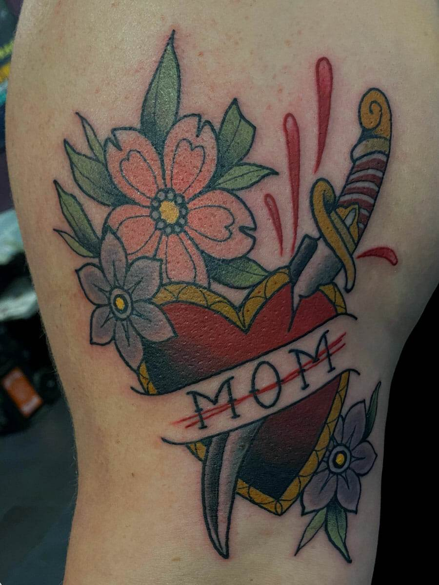
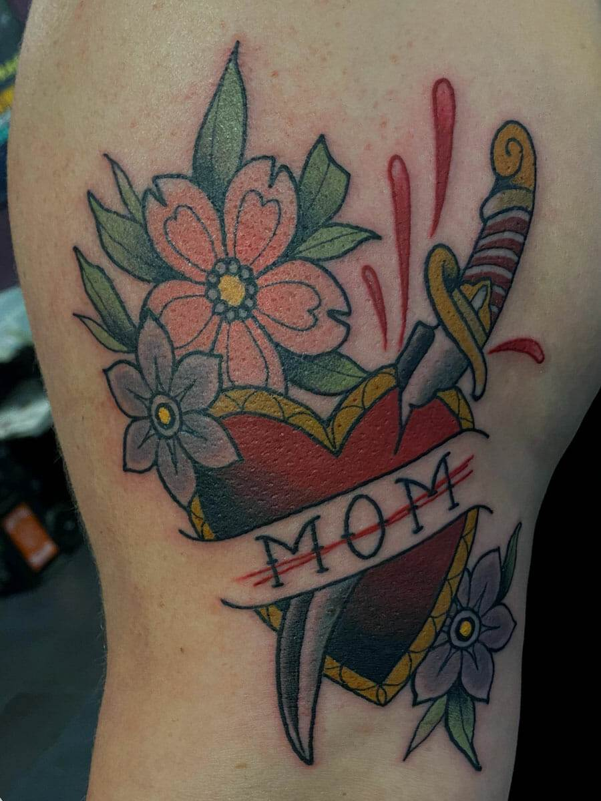
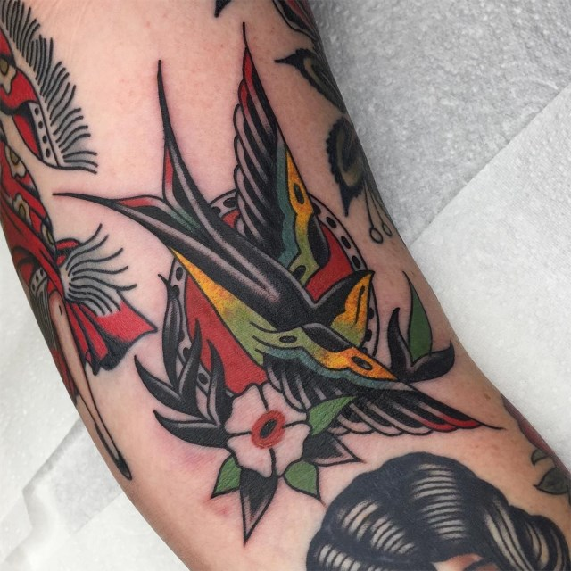
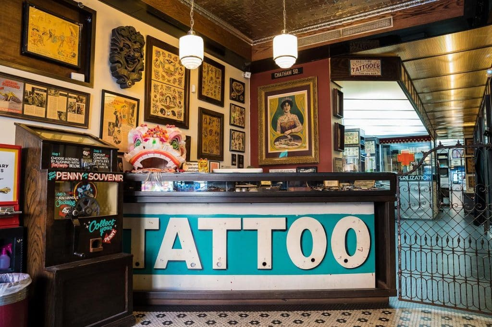
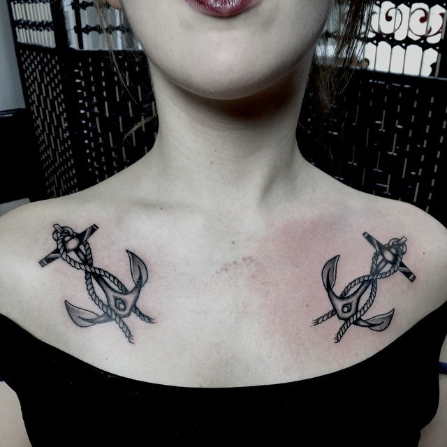
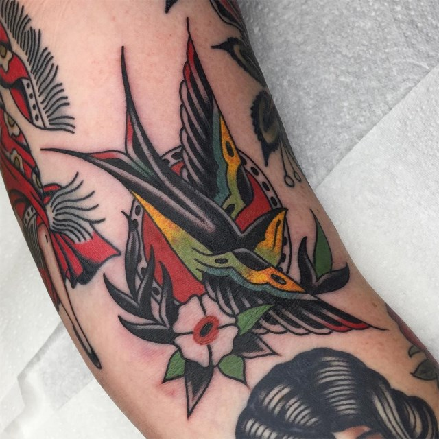
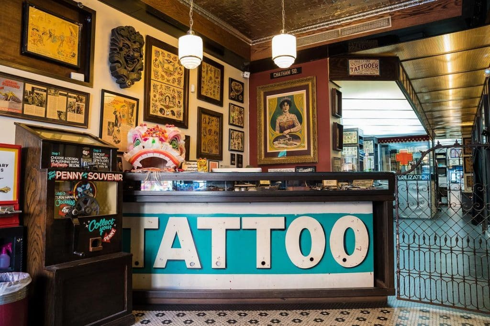
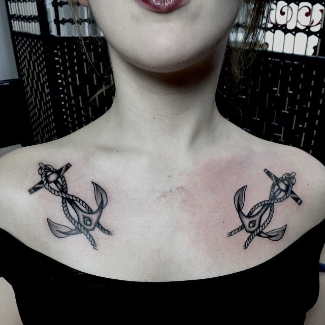

Welcome to Petal and Thorn
Petal & Thorn Tattoos is located in downtown Eau Claire, Wisconsin. Specializing in American Traditional tattooing, Petal & Thorn is incredibly passionate about creating unique and exciting tattoo designs for each customer that walks in.
We offer a wide variety of body piercings as well, with experienced professionals who specialize (but are not limited to) lip, ear, and nose piercings. Petal & Thorn also offers “Flash Friday,” where clients can walk in and choose from a variety of flash tattoos all for $50 and done that day (first come, first serve policy).
 

 




